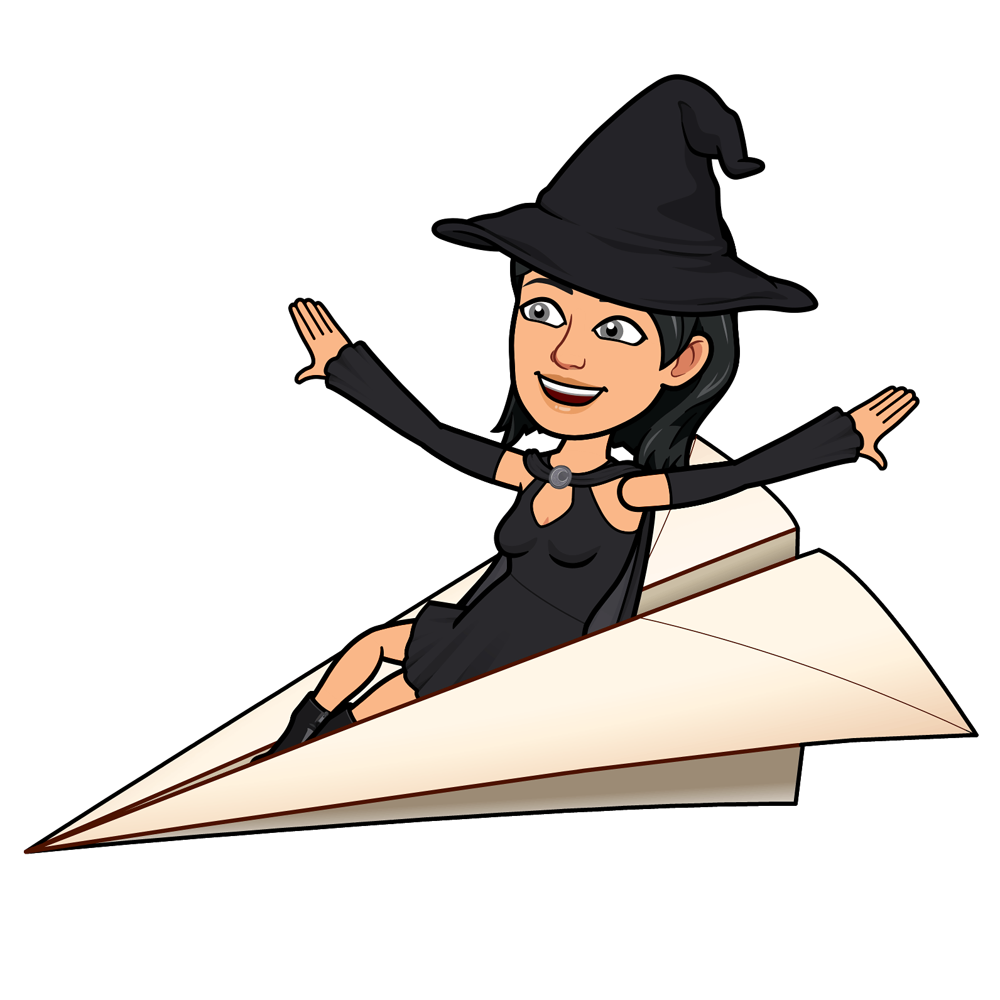

Chapter 1: The Mysterious Invitation
One morning, Jax Blaze and Skye Skates were practicing their favorite moves in the wizarding courtyard. Jax was spinning and twirling, his fiery staff sending sparks into the air with every dance step. Skye zipped by on her roller skates, leaving a sparkling trail of stardust behind her.
Suddenly, a glowing envelope appeared in front of them. It floated down gently, landing right at Skye’s feet. She bent down and picked it up, feeling the magic buzz through her fingers.
"It’s from the Grand Wizard of the Enchanted Grove!" Skye said, reading the letter aloud. "You are both invited to unlock the secrets of the Grove. A treasure awaits—only if you solve its magical puzzles."
Jax’s eyes sparkled with excitement. "A treasure hunt? Count me in!" he said, twirling his staff. "Let’s dance our way to it!" Skye smiled, adjusting her skates. "And I’ll roll there with style. Let’s go, Jax!" They grabbed their gear—Jax’s magical staff and Skye’s glowing roller skates—and set off toward the Enchanted Grove, eager to uncover its mysteries.